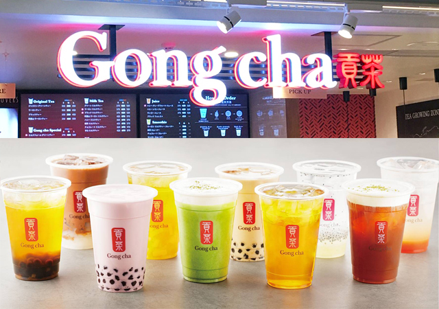
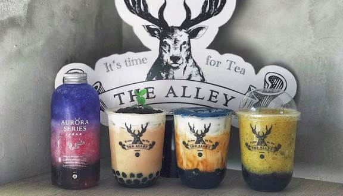

Gongcha
台湾の人たちは、毎日、お茶を飲む。
街を歩きながら、友人と話しながら、仕事の合間にも、飲む。お茶の味わい方、楽しみ方を、すべて知り尽くした台湾からやってきました。
台湾ティーカフェGong chaです。ゴンチャは、台湾での誕生以来、アジアを中心に世界で約1,100店舗を展開する世界最大規模の台湾ティーカフェ。
世界中で人気の理由は、本場の上質な台湾ティーが、カジュアルなスタイルとお手頃な価格で日常的に楽しめるから。gongchaは、2015年9月の日本上陸から、今年で4周年を迎えます。GCJでは『ジャスミン グリーンティー』、『阿里山 ウーロンティー』、『ウーロンティー』、『ブラックティー』の4 種類のベースティーを基に「オリジナル ティー」と呼ぶストレートティーや、「ミルクティー」、ミルクフォームをあしらった「ゴンチャ スペシャル」等のティーメニューを販売しております。ベースティーには厳選された?品質の茶葉を使?し、茶葉本来の美味しさを味わっていただくため、抽出時の湯温や抽出時間を茶葉ごとに変えており、味だけではなく、抽出からご提供までの鮮度にも拘って提供しております。
そしてこの度、日本上陸4 周年を機に、改めて4 種類のベースティーにフォーカスし、お客様にそれぞれの美味しさや特?をより知っていただきたいと考え、Gongcha公式Twitter でお客様のお好きなベースティーに投票いただくキャンペーンを実施いたします。ご参加いただいたには、投票で選ばれたNo.1 Tea を対象としたカスタマイズチケットをプレゼントいたします。
また、キャンペーン期間中は、全店の店舗クルーが各前の推しTea のT シャツを着たし、名前の推しTea を応援します。gongcha は、何杯のお茶を通じてお客様の生活に潤いをご提供し、上質なお茶通常的に気軽に楽しむスタイルをご提案して参ります。
100%
モッチャムはベトナム語で１００％
は材料・製法・愛情に１００％こだわり
究極の生タピオカを日々追求しています
モッチャムで知る本物のタピオカ
一口飲むと一瞬でベトナムにトリップするような
ここからはじまる、まだ味わったことのない
タピオカの世界を楽しんでください
-１００%手作りの
モチモチの出来たて生タピオカ
毎朝手ごねした生地を
日本で唯一の球団機で
まんまるモチモチに
-１００%ベトナム産の
希少なこだわりタピオカ粉
アジアの美食国ベトナムから
素材を直輸入
-１００%生タピオカが
主役のドリンクメニュー
モチモチ新鮮な生タピオカの
食感を存分に楽しめる
特製ドリンク
THE ALLEY
人それそ゛れ心の中にある、幸せなお茶の時間。のんひ゛りした午後。日差しの暖かさ。 さわやかて゛心地よい風。恋人の甘い微笑み。口の中に広か゛る甘い味わい。初めて美味しいお茶を飲んた゛ときの感動を思い出し、 言葉て゛表せない気持ちは、全て「THE ALLEY（ジ アレイ）」のト゛リンクて゛あなたの心に送ります。“ 初めて飲むと驚きを感じ、２回飲むと好きになり、３回飲むと恋しくなる ”
日常の中に溶け込むように、生活の所々に様々な感動を届けたい。
これが “THE ALLEY（ジ アレイ）” の初心。
“THE ALLEY” の想いは
“ただのドリンクスタンドではなく、本当に素晴らしい生活へ導けるドアの鍵“ 。
私たちはいい飲み物は味覚だけではなく、生活に感動を起こせるものだと信じています。
お茶を飲むことで心を満たし、味わうことで幸せを感じる。
あなたの心に潜んでいた、言葉で表すことのできない神秘的な世界を。
“ THE ALLEY ”の飲み物を通じて、
あなたの美しい生活を描いていきましょう。